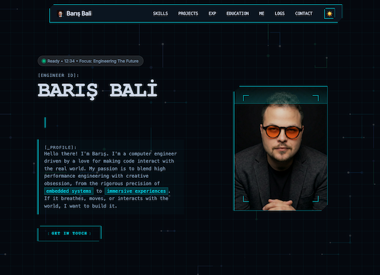
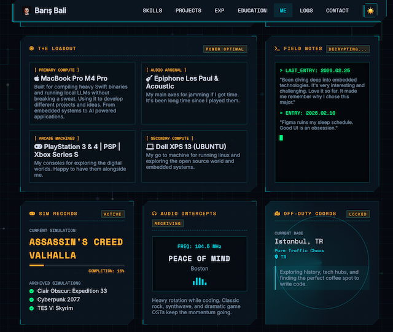
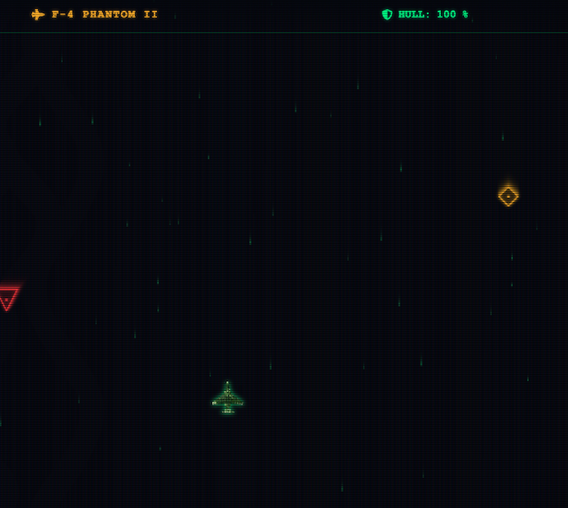
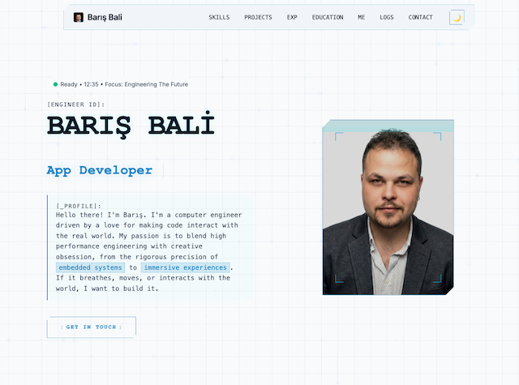

PROJECT TYPE: WEBSITE
PERSONAL PAGE
RETRO-FUTURE V.01 PAGE




ABOUT THIS PROJECT
The goal was to build a personal site from scratch *without* frameworks. This allowed for complete control over performance and aesthetics. Showing my personal design approach and personality with the design.
KEY FEATURES
- Pure Vanilla JS for all interactions (no jQuery).
- Theme toggle with `localStorage` persistence.
- Mobile-first, fully responsive layout.
- Animated skills tags and hover effects.
HTML5
CSS3
Vanilla JS
Responsive
Design